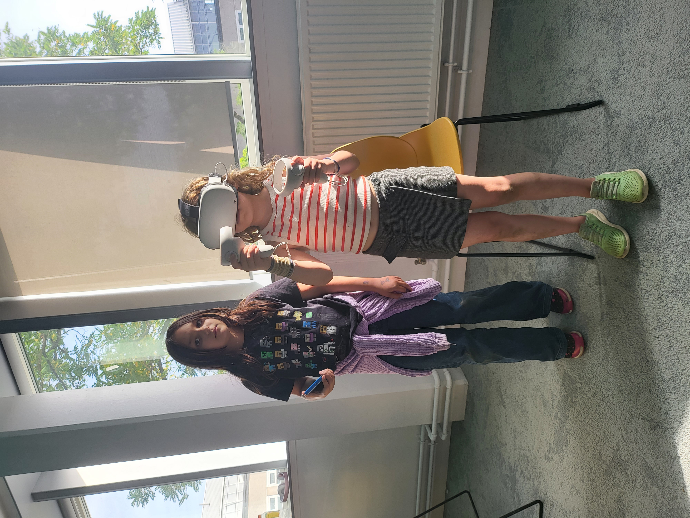
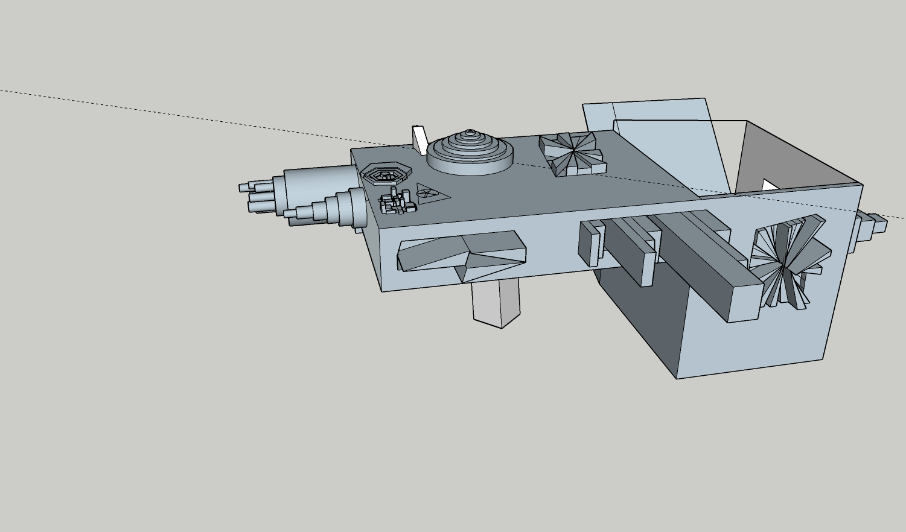
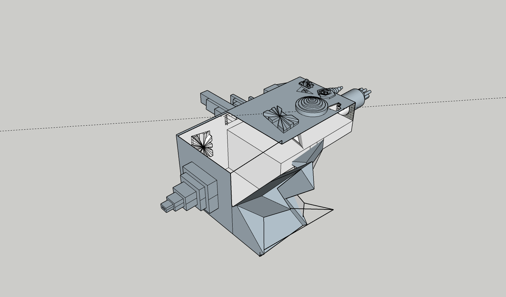

Sophia (age 8), Anna (age 10) and Diana(age 8) NASA Space Apps Challenge Project 2023
Challenge: Visualize a Space Mission Using Virtual Reality
- We prepared by installing GMAT on the laptop
- At the challenge we followed the tutorial for GMAT the trajectory . This step required a lot of concentration which some of us didn not have till the end
- We produced two script files (Anna's and Sophia's) with our trajectory one done by Anna fully and one done by Sophia with help of mum to finish
- We didn't manage to do more with VR visualization but we played with the VR set 
- Diana did a 3D model of the spaceship in SketchUP  
We had a lot of fun thank you!